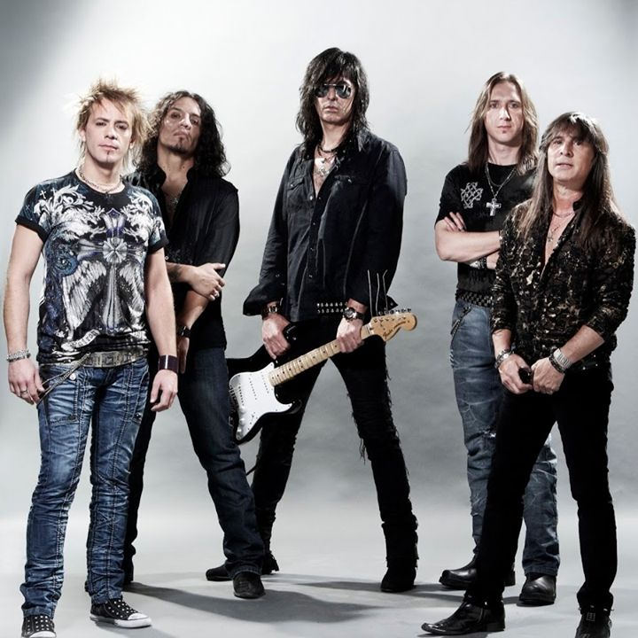

1987
Rata Blanca fue fundada por Walter Giardino, iniciando una nueva era del heavy metal en Argentina.
Rata Blanca es una banda icónica del heavy metal en español, fundada en Argentina. Con un estilo que mezcla poderosos riffs de guitarra y letras épicas, se ha ganado un lugar en el corazón de los fanáticos del rock. Su música es reconocida por la influencia de temas medievales y míticos, convirtiéndose en leyendas del género.
Rata Blanca fue fundada por Walter Giardino, iniciando una nueva era del heavy metal en Argentina.
Lanzamiento de su primer álbum homónimo "Rata Blanca". Este disco marcó el comienzo de su éxito.
Lanzamiento de "Magos, Espadas y Rosas", uno de los álbumes más icónicos de la banda.
Separación temporal de la banda después de varios años de giras y lanzamientos.
Reencuentro de la banda para una gira conmemorativa y lanzamiento de nuevo material.
A lo largo de los años, Rata Blanca ha dejado una marca indeleble en el mundo del rock, brindando presentaciones legendarias y momentos épicos.
Una presentación icónica en la capital argentina.

Un recorrido épico por los grandes escenarios del continente.
El punto culminante de su carrera en Argentina.